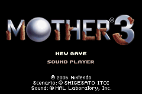

Premisa
Este juego se desarrolla en un mundo llamado "Islas Ningunaparte", un territorio aislado de civilizacion, habitado por animales antropomorficos, humanos y criaturas extrañas. La trama sigue a Lucas, un joven que se embarca en una aventura tras una serie de tragicos acontecimientos.
Lucas
Es un joven de corazon puro que vive en el pueblo de Tazmily junto con su hermano Claus y sus padres Hinawa y Flint, una cadena de acontecimientos provocara que Lucas se abarque en una aventura con el objetivo de salvar a su gente de la dictadura a la que estan sometidos.
Kumatora
Es una adolescente que fue criada por las Magipsis, siendo así al igual que Lucas, una portadora de los poderes PSI. Del mismo modo que Ana y Paula, ella es capaz de aprender poderosas habilidades PSI que pueden ayudar a Lucas y los demas.

Duster
Es el hijo de Wess, un ladron experto que ha caido en el olvido por su edad avanzada. Duster fue educado por su padre para seguir sus pasos en el arte del robo, aunque a lo largo del tiempo, se convirtió en una persona mas tranquila.

Boney
Es un perro que pertenece a la familia de Lucas. Es especialmente cercano a Lucas y su hermano Claus. A pesar de su apariencia simple y su naturaleza de perro, Boney tiene un papel activo en la historia, siempre al lado de Lucas, siguiendolo en su aventura.